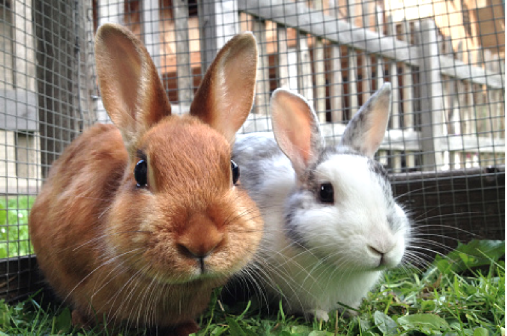

Found a Bunny?
Bunny Boutique
About Us
Archive
Contact Us
The House Rabbit Resource Network is a non-profit 501(c)(3) organization dedicated to improving the lives of domestic rabbits by:
We are also a network of house-rabbit enthusiasts in Austin, Texas who help each other with information, support, outreach and camaraderie. “Your friends may tire of your endless rabbit tales, but we won’t!”
We advocate:
We find rabbits to be rewarding, engaging companions. We want others to share the joys and avoid the common pitfalls of sharing life with a house rabbit.
House Rabbit Resource Network, Inc.
PO Box 2381 Pflugerville, TX 78691
512-444-EARS (3277)
hrrn@rabbitresource.org